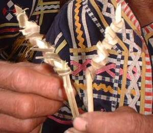
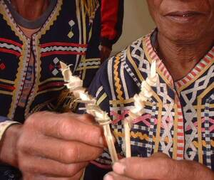

kerew  
/kɔdɔw/
n.
“traditional_calendar”
n.
a traditional device for counting off a fixed number of days.
Eng. calendar; appointment; schedule; plan; date
Online dict status: -
Usage level: R
vi.
for someone (egkekerew, agent, eg><ø-rdpCV-) to count off a fixed number of days
Wrd.Gloss: traditional_calendar
Cult. A number of knots are tied in a piece of cane to represent the desired time period. e.g. the number of days until an arranged wedding. Each day, one knot is cut off the cane until the time is up.
Egkekerew si Anggam Andung wey ka sumbaley ran eyew egkatahaan ke ken-u ka aldew te kasal te anak din ne malitan wey te anak te sumbaley ran.
Uncle Andong and his neighbor are counting off a fixed number of days to know when the day of wedding of his daughter and the son of his neighbor.
Eng. count days; days, count; count in advance; schedule; plan ahead; set in time
Online dict status: -
Usage level: R
Updated by: RJH,AAA,RJH
Last updated: 18/Jun/2012
"egkerawen" in text "Childbirth"
This page last updated: 28-Dec-2019
Copyright © 2009-2014, Matigsalug Language Christian Association, Inc